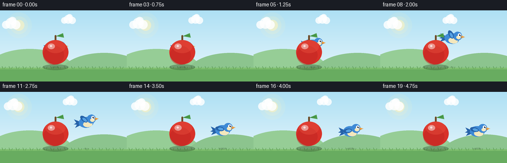
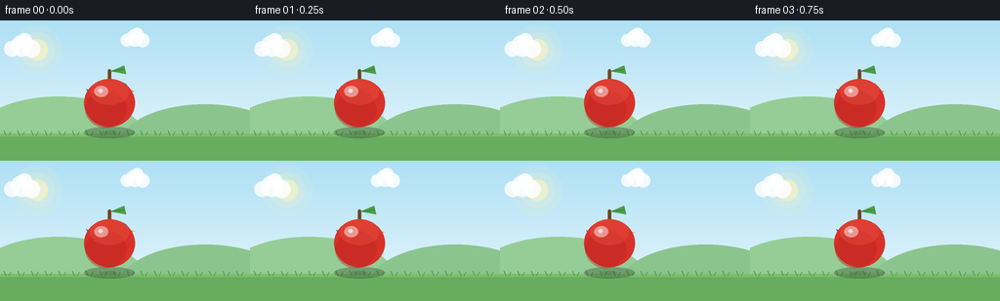

CODING AGENTS AS PIXEL WORLD MODELS
traex/Seed-2.1-Pro-0915 · dynamic_spatial_relationship_0036
点击播放 · 原生 RGB 像素
逐轮保存的候选
回放视频、检查图与代码变化。
每份候选均可单独播放。实际图片检查记录在下方工具轨迹中。
候选 01播放与检查图
点击播放 · 原生 RGB 像素


展开代码变化
--- 上一保存版本
+++ 本次保存版本
@@ -0,0 +1,220 @@
+"""Procedural text-to-video: a bird behind an apple flies to its right.
+
+Renders 20 RGB frames (256x144, 4 fps) with PIL at 3x supersampling.
+Depth ordering is explicit: bird is drawn first, apple on top, so the
+occlusion in the opening frames reads unambiguously as "behind".
+"""
+import math
+
+import numpy as np
+from PIL import Image, ImageDraw
+
+import artifact_io
+
+W, H, N, FPS = 256, 144, 20, 4.0
+SS = 3 # supersampling factor
+
+APPLE = (112.0, 84.0)
+APPLE_R = 25.0
+BIRD_START = (112.0, 78.0)
+BIRD_END = (196.0, 80.0)
+
+
+def s(v):
+ """Scale a base-resolution coordinate to supersampled resolution."""
+ return v * SS
+
+
+def lerp(a, b, t):
+ return a + (b - a) * t
+
+
+def smoothstep(u):
+ u = max(0.0, min(1.0, u))
+ return u * u * (3.0 - 2.0 * u)
+
+
+def draw_background(img, frame_index):
+ """Sky gradient, sun, drifting clouds, a hill and a grass strip."""
+ draw = ImageDraw.Draw(img, "RGBA")
+ top = np.array([174, 224, 244])
+ bottom = np.array([233, 247, 252])
+ for y in range(H * SS):
+ t = y / (H * SS - 1)
+ color = tuple((top * (1 - t) + bottom * t).astype(int))
+ draw.line([(0, y), (W * SS, y)], fill=color)
+
+ # Soft sun, upper left.
+ sx, sy = s(38), s(30)
+ for r, alpha in ((26, 26), (18, 40), (11, 150)):
+ draw.ellipse([sx - s(r), sy - s(r), sx + s(r), sy + s(r)],
+ fill=(255, 244, 190, alpha))
+
+ # Two clouds drifting slowly to the right.
+ drift = frame_index * 0.35
+ for cx0, cy0, scale in ((52, 26, 1.0), (168, 18, 0.8)):
+ cx = (cx0 + drift * scale) % (W + 60) - 30
+ for dx, dy, r in ((0, 0, 11), (10, 3, 9), (-10, 3, 8), (3, -5, 8)):
+ x, y, rr = s(cx + dx * scale), s(cy0 + dy * scale), s(r * scale)
+ draw.ellipse([x - rr, y - rr, x + rr, y + rr], fill=(255, 255, 255, 210))
+
+ # Distant rounded hill.
+ hill = (150, 205, 150, 255)
+ draw.ellipse([s(-30), s(78), s(150), s(168)], fill=hill)
+ draw.ellipse([s(120), s(86), s(300), s(176)], fill=(140, 196, 142, 255))
+
+ # Grass ground.
+ draw.rectangle([0, s(116), W * SS, H * SS], fill=(104, 172, 96, 255))
+ draw.rectangle([0, s(116), W * SS, s(119)], fill=(126, 190, 110, 255))
+ # A few blades of grass for texture.
+ for gx in range(6, W, 14):
+ x = s(gx)
+ draw.line([(x, s(118)), (x - s(2), s(113))], fill=(86, 150, 80, 255), width=max(1, s(1)))
+ draw.line([(x + s(3), s(118)), (x + s(5), s(114))], fill=(86, 150, 80, 255), width=max(1, s(1)))
+
+
+def draw_ground_shadow(img, x, ground_y, width, alpha):
+ draw = ImageDraw.Draw(img, "RGBA")
+ ry = width * 0.22
+ draw.ellipse([s(x - width), s(ground_y - ry), s(x + width), s(ground_y + ry)],
+ fill=(40, 70, 40, alpha))
+
+
+def draw_apple(img):
+ """Red apple with stem, leaf and glossy highlight. Foremost object."""
+ draw = ImageDraw.Draw(img, "RGBA")
+ cx, cy, r = APPLE[0], APPLE[1], APPLE_R
+
+ # Contact shadow.
+ draw_ground_shadow(img, cx, 115, r * 1.05, 90)
+
+ # Stem (behind the top of the fruit body).
+ draw.rounded_rectangle([s(cx - 1.6), s(cy - r - 9), s(cx + 1.6), s(cy - r + 3)],
+ radius=s(1.6), fill=(110, 72, 38, 255))
+ # Leaf.
+ leaf = [(cx + 1, cy - r - 7), (cx + 15, cy - r - 13), (cx + 17, cy - r - 4)]
+ draw.polygon([(s(x), s(y)) for x, y in leaf], fill=(76, 158, 74, 255))
+ draw.line([s(cx + 2), s(cy - r - 7), s(cx + 15), s(cy - r - 9)],
+ fill=(52, 120, 54, 255), width=max(1, s(1)))
+
+ # Fruit body, slightly wider than tall.
+ body = [s(cx - r * 1.04), s(cy - r * 0.96), s(cx + r * 1.04), s(cy + r)]
+ draw.ellipse(body, fill=(216, 49, 41, 255))
+ # Shaded lower-left side.
+ draw.ellipse([s(cx - r), s(cy - r * 0.5), s(cx + r * 0.7), s(cy + r * 1.05)],
+ fill=(186, 34, 32, 110))
+ # Warm top blush.
+ draw.ellipse([s(cx - r * 0.8), s(cy - r * 0.95), s(cx + r * 0.8), s(cy + r * 0.1)],
+ fill=(236, 86, 66, 90))
+ # Glossy highlight.
+ draw.ellipse([s(cx - r * 0.62), s(cy - r * 0.68), s(cx - r * 0.05), s(cy - r * 0.22)],
+ fill=(255, 255, 255, 120))
+ draw.ellipse([s(cx - r * 0.45), s(cy - r * 0.55), s(cx - r * 0.28), s(cy - r * 0.4)],
+ fill=(255, 255, 255, 170))
+
+
+def _rotated_ellipse(draw, center, rx, ry, angle, fill):
+ """Filled rotated ellipse rendered as a transformed polygon mask."""
+ cx, cy = center
+ steps = 24
+ pts = []
+ ca, sa = math.cos(angle), math.sin(angle)
+ for k in range(steps):
+ a = 2 * math.pi * k / steps
+ x, y = rx * math.cos(a), ry * math.sin(a)
+ pts.append((s(cx + x * ca - y * sa), s(cy + x * sa + y * ca)))
+ draw.polygon(pts, fill=fill)
+
+
+def draw_bird(img, cx, cy, flap, tilt):
+ """Cartoon bluebird facing right. Drawn before the apple so it stays behind."""
+ draw = ImageDraw.Draw(img, "RGBA")
+ ca, sa = math.cos(tilt), math.sin(tilt)
+
+ def local(x, y):
+ return cx + x * ca - y * sa, cy + x * sa + y * ca
+
+ def ell(x, y, rx, ry, fill, angle=0.0):
+ px, py = local(x, y)
+ _rotated_ellipse(draw, (px, py), rx, ry, angle + tilt, fill)
+
+ def poly(points, fill):
+ draw.polygon([(s(px), s(py)) for px, py in (local(x, y) for x, y in points)], fill=fill)
+
+ blue = (62, 138, 214, 255)
+ deep_blue = (38, 98, 168, 255)
+ cream = (244, 231, 188, 255)
+ orange = (240, 158, 58, 255)
+
+ # Tail feathers, fanned slightly.
+ poly([(-11, -2), (-24, -8), (-20, -1), (-25, 2), (-19, 3), (-23, 9), (-10, 4)], deep_blue)
+ # Body.
+ ell(0, 0, 15, 11, blue)
+ # Cream belly.
+ ell(3, 4, 9.5, 6, cream)
+ # Head, merged at the front.
+ ell(11, -6, 9, 9, blue)
+ # Cheek.
+ ell(13, -3.5, 4.5, 3.6, cream)
+ # Beak: two triangles, upper and lower.
+ poly([(18.5, -8), (26, -5.5), (18.5, -4.5)], orange)
+ poly([(18.5, -4.5), (24.5, -4.8), (18.5, -2.5)], (214, 128, 40, 255))
+ # Eye with white glint.
+ ell(14.5, -8.5, 3.4, 3.4, (255, 255, 255, 255))
+ ell(15.4, -8.5, 1.7, 1.7, (28, 34, 44, 255))
+ ell(16.0, -9.2, 0.7, 0.7, (255, 255, 255, 255))
+ # Flapping wing, pivoted at the shoulder.
+ wing_angle = flap
+ sx0, sy0 = local(1, -2)
+ _rotated_ellipse(draw, (sx0 - 7 * math.cos(wing_angle + tilt),
+ sy0 - 7 * math.sin(wing_angle + tilt)),
+ 9, 4.6, wing_angle + tilt, deep_blue)
+ _rotated_ellipse(draw, (sx0 - 5 * math.cos(wing_angle + tilt),
+ sy0 - 5 * math.sin(wing_angle + tilt)),
+ 5.5, 2.6, wing_angle + tilt, (86, 162, 228, 255))
+
+
+def bird_pose(frame_index):
+ """Position, tilt and wing phase of the bird for a given frame."""
+ t = frame_index / (N - 1)
+ # Hold behind the apple, then fly, then settle on its right.
+ u = smoothstep((t - 0.14) / 0.66)
+ x = lerp(BIRD_START[0], BIRD_END[0], u)
+ arc = -24.0 * math.sin(math.pi * u) # rise over the apple while crossing
+ idle = math.sin(frame_index * 0.9) * 1.2 * (1.0 - u)
+ settle = math.sin(max(0.0, (t - 0.8) / 0.2) * math.pi) * 0 # held steady at end
+ y = lerp(BIRD_START[1], BIRD_END[1], u) + arc + idle + settle
+ tilt = lerp(0.0, 0.12, math.sin(math.pi * u)) * (1 if u < 0.5 else -1)
+ # Fast flapping in flight, gentle flapping while hovering.
+ flying = math.sin(math.pi * u)
+ phase_speed = 0.45 + flying * 1.7
+ flap = math.sin(frame_index * phase_speed * math.pi) * (0.25 + flying * 0.85)
+ return x, y, tilt, flap, u
+
+
+def render_frame(frame_index):
+ big = Image.new("RGB", (W * SS, H * SS))
+ draw_background(big, frame_index)
+
+ bx, by, tilt, flap, u = bird_pose(frame_index)
+ # Bird shadow on the grass: shrinks and fades as the bird rises.
+ height = max(0.0, 112 - by)
+ shadow_w = 13 * max(0.35, 1.0 - height / 90.0)
+ shadow_a = int(70 * max(0.3, 1.0 - height / 110.0))
+ draw_ground_shadow(big, bx, 115, shadow_w, shadow_a)
+
+ # Bird first, apple after it: the apple occludes the bird on overlap.
+ draw_bird(big, bx, by, flap, tilt)
+ draw_apple(big)
+
+ return np.asarray(big.resize((W, H), Image.Resampling.LANCZOS), dtype=np.uint8)
+
+
+def main():
+ frames = np.stack([render_frame(i) for i in range(N)], axis=0)
+ artifact_io.save(frames, ".")
+ print(f"Saved {frames.shape[0]} frames at {W}x{H}, {FPS} fps")
+
+
+if __name__ == "__main__":
+ main()
可观测工具轨迹
实际执行的命令与返回图片。
命令 1exit 0
/bin/bash -lc 'ls -la && cat prompt.txt && echo "=====RULES=====" && cat GENERATION_RULES.md && echo "=====SPEC=====" && cat task_spec.json'
命令 2exit 0
/bin/bash -lc 'cat artifact_io.py && echo "=====PLAYER=====" && cat player_template.html'
命令 3exit 0
/bin/bash -lc 'cd . && python generate.py && ls -la'
保存候选 1 份；完成命令 3 次；可验证图片返回 0 张。原始 API 响应与完整日志保留在本地。